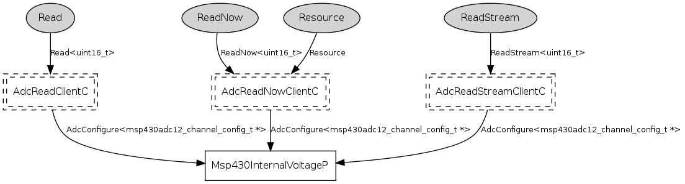

Component: tos.chips.msp430.sensors.Msp430InternalVoltageC
generic configuration Msp430InternalVoltageC()
Msp430InternalVoltageC is the voltage sensor available on the
msp430-based platforms.
To convert from ADC counts to actual voltage, divide by 4096 and
multiply by 3.
- Author:
-
Gilman Tolle <gtolle@archrock.com>
- Version:
-
$Revision: 1.4 $ $Date: 2006-12-12 18:23:10 $
Provides
Wiring
